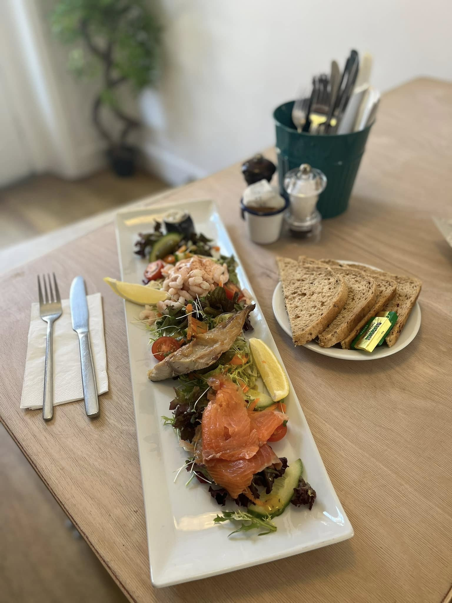
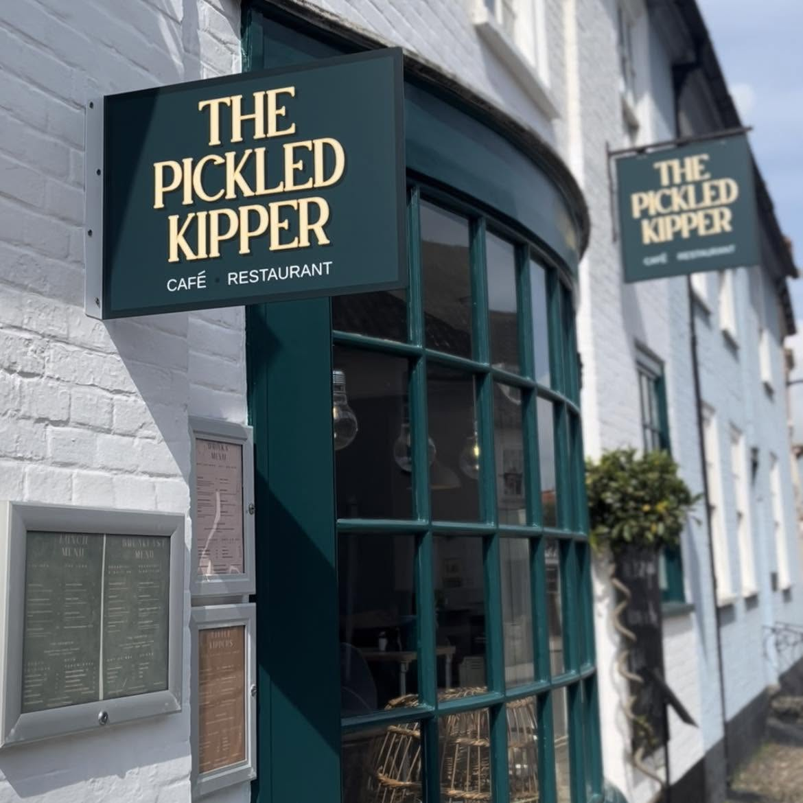
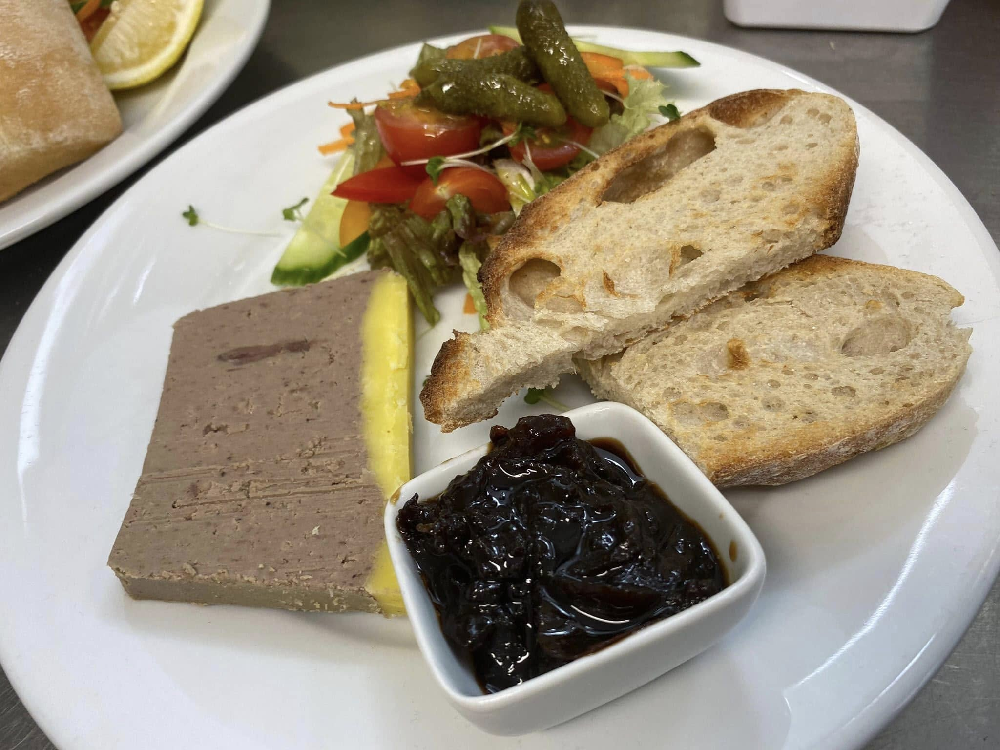
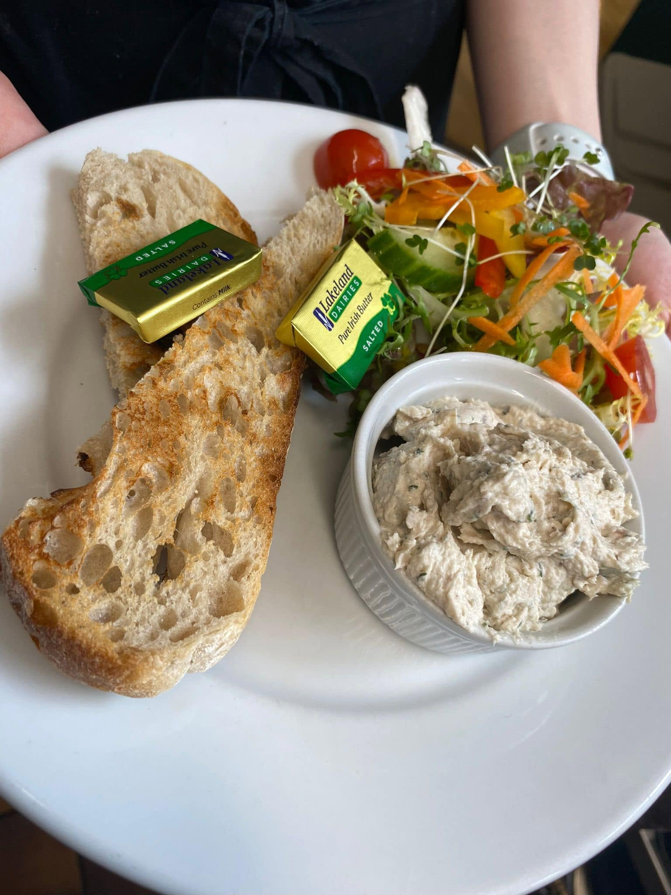
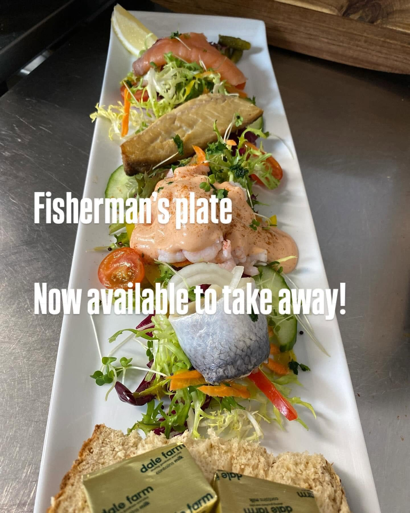
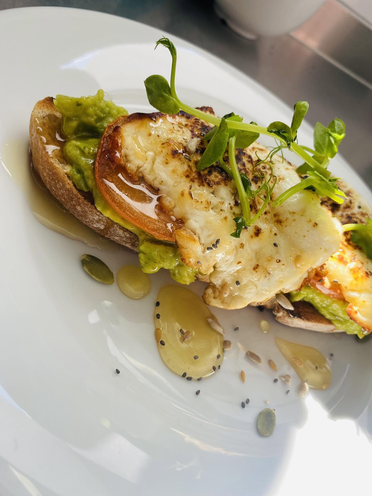
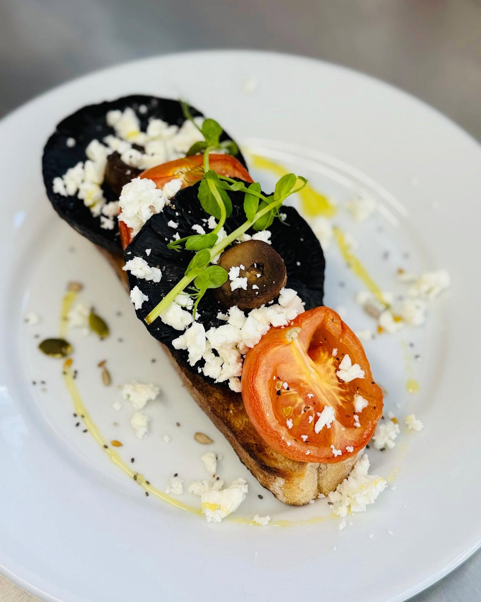

Fresh seafood, open sandwiches, jacket potatoes, and proper coffee on Southwold High Street.
Opened 2024 by Lucy Jones
Lucy Jones brought over twenty years of hospitality to the High Street when she opened The Pickled Kipper in 2024. A small independent cafe built around a simple idea: the best of the Suffolk coast, served without fuss.
Alongside open sandwiches, jacket potatoes, and homemade puddings, the cafe has a dedicated fish section. Fresh catches, smoked kipper, dressed crab, and local seafood sit at the heart of the menu.
Coffee is taken seriously. Cakes are baked each morning. Everything is available to eat in or take away.




Lucy is planning a series of seafood evening events at the cafe. The counter stays open after hours, the wine comes out, and the menu shifts to dishes built around the day's best catch.
Think dressed crab with soda bread, smoked mackerel pate, and a kipper fillet with brown butter and capers. Small plates, shared tables, and the sort of evening that only a seaside town can do properly.
Pop in or ring to ask about dates. Word of mouth is how it starts.

